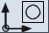
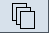
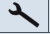
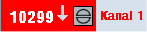
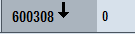

In den Bedienbereichen "Parameter", "Programm", "Programm-Manager", "Diagnose" und "Inbetriebnahme" besteht die Statusanzeige aus der ersten Zeile der großen Statusanzeige.
Aktiver Bedienbereich und Betriebsart
Anzeige | Bedeutung |
|---|
Aktiver Bedienbereich |
 | Bedienbereich "Maschine" Bei Touch-Bedienung, können Sie hier das Bedienbereichsmenü aufrufen. |
|  | Bedienbereich "Parameter" |
 | Bedienbereich "Programm" |
|  | Bedienbereich "Programm-Manager" |
| | Bedienbereich "Diagnose" |
|  | Bedienbereich "Inbetriebnahme"
|
Ctrl-Energy - Leistungsanzeige |
 | Die Maschine arbeitet nicht produktiv. |
 | Die Maschine arbeitet produktiv und es wird Energie verbraucht.
|
 | Die Maschine speist Energie ins Netz zurück.
|
Die Leistungsanzeige in der Statuszeile muss eingeschaltet werden.
Weitere Informationen zur Konfiguration finden Sie im
Systemhandbuch Ctrl-Energy. |
Aktive Betriebsart bzw. Unterbetriebsart |
| | Betriebsart "JOG" |
| | Betriebsart "MDA" |
| | Betriebsart "AUTO" |
| | Unterbetriebsart "TEACH In" |
| | Unterbetriebsart "REPOS" |
| | Unterbetriebsart "REF POINT" |
Alarme und Meldungen
Anzeige | Bedeutung |
|---|
|  | Alarmanzeige Die Alarmnummern werden in weißer Schrift auf rotem Hintergrund angegeben. Der zugehörige Alarmtext wird in roter Schrift angegeben. Ein Pfeil zeigt an, dass mehrere Alarme aktiv sind. Ein Quittierungssymbol zeigt an, dass der Alarm quittiert bzw. gelöscht werden kann. |
|  | NC- bzw. PLC-Meldung Die Meldungsnummern und -texte werden in schwarzer Schrift angegeben. Ein Pfeil zeigt an, dass mehrere Meldungen aktiv sind. |
| | Meldungen aus NC-Programmen haben keine Nummern und werden in grüner Schrift angegeben. |
Farbige Anzeige ändern
Sie haben die Möglichkeit, anwenderspezifische Farben für die Anzeige von Alarmen und Meldungen zu ändern.
 | Maschinenhersteller Beachten Sie hierzu die Angaben des Maschinenherstellers. |